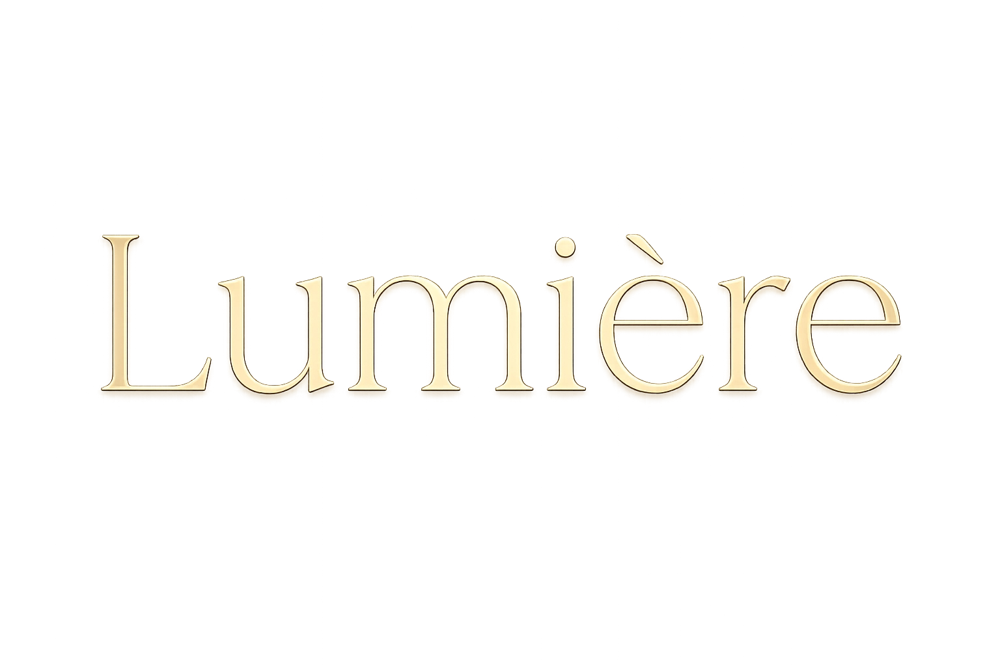
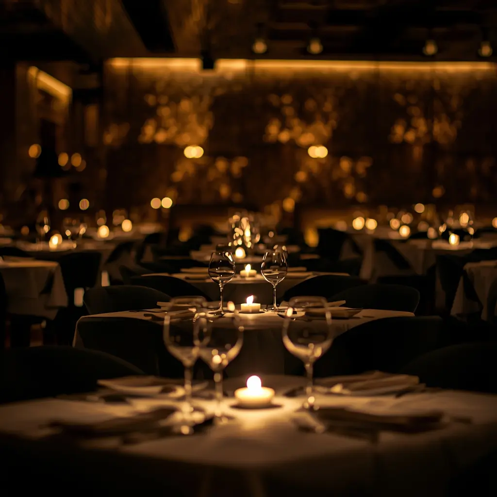
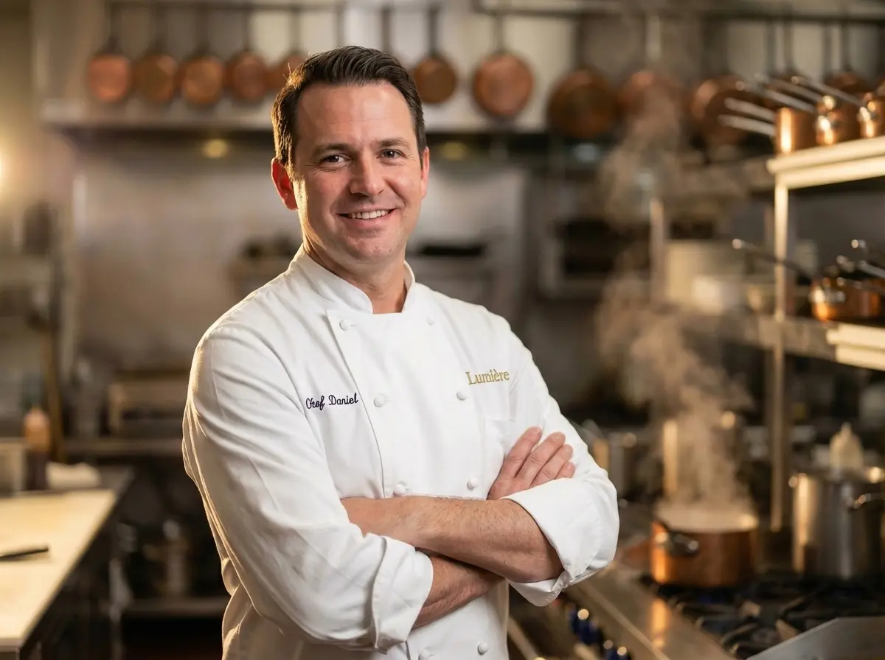
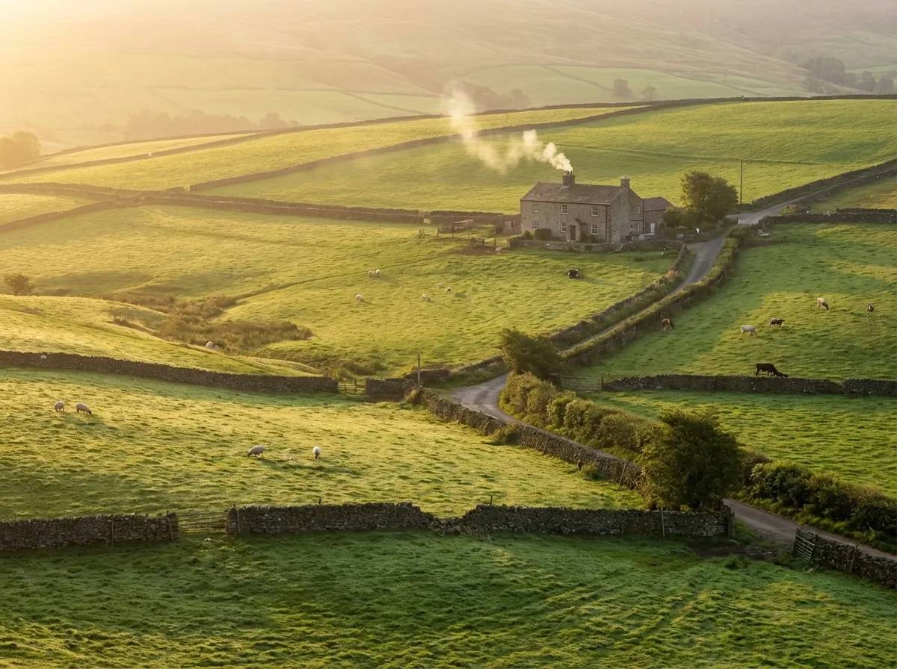
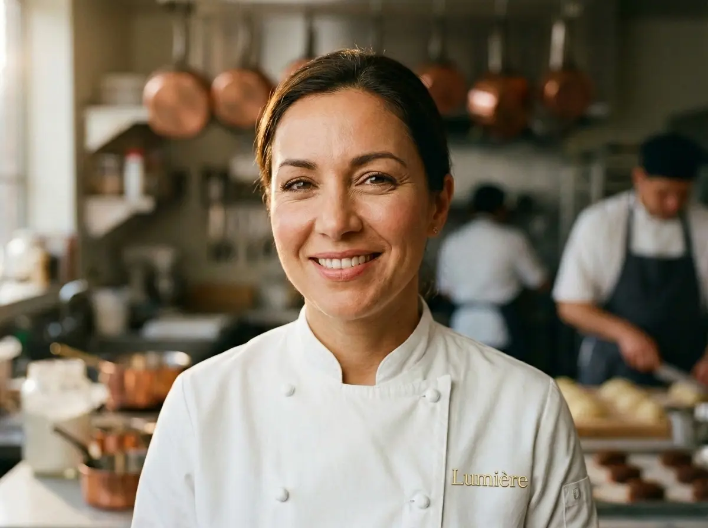

OUR STORY
Fine dining rooted in provenance, craft and a singular obsession with excellence.

ESTABLISHED 2019
Lumière began not as a business plan but as a belief — that the finest ingredients, treated with absolute respect, need nothing more than skilled hands and a quiet kitchen to become something extraordinary. That belief has guided every decision we have made since opening our doors on Mount Street in the autumn of 2019.
What started as twelve tables and a team of seven has grown into one of Mayfair's most intimate and admired dining rooms. We have never sought scale. We have always sought depth — in flavour, in craft, in the relationships we build with the farmers, fishermen and producers who make everything we do possible.
"We have never sought scale. We have always sought depth."
EXECUTIVE CHEF
Executive Chef & Founder
Thomas Renard spent twelve years in some of Europe's most exacting kitchens before returning to London with a single ambition: to open the restaurant he had always wanted to eat in. Trained under two Michelin-starred chefs in Lyon and later in Copenhagen, his approach is shaped by classical French rigour softened by a deep respect for British seasonal produce.
At Lumière, Thomas cooks the food he believes in rather than the food the industry expects of him. The menu changes with the seasons not as a marketing exercise but because he refuses to use an ingredient before it has reached its full potential. That discipline is what our guests return for.
When he is not in the kitchen, Thomas is visiting the farms and fisheries that supply Lumière — relationships built over years of mutual respect and shared standards. He believes the dining room is simply the final stage of a much longer process that begins in the field.

OUR PHILOSOPHY
Every ingredient on our menu has a name, a place and a story. We source exclusively from British and European artisan producers whose values mirror our own. Knowing where food comes from is not a trend for us — it is the foundation of everything we cook.
Our menu exists in a state of constant renewal. We do not serve strawberries in January or asparagus in October. We follow the calendar of the land and the sea, and we believe that constraint is the mother of creativity in the kitchen.
Fine dining is not about complexity for its own sake. At Lumière we believe in removing everything that does not serve the ingredient. The best dish is the one where every element belongs — and not one element more.
"The finest cooking is not about what you add. It is about what you have the confidence to leave out."
— Thomas Renard, Executive Chef

OUR PRODUCERS
Every producer on our supplier list was chosen after a visit — not a phone call, not a brochure, not a sales pitch. Thomas or a senior member of the kitchen team has stood on the land, seen the animals, tasted the produce and looked the grower in the eye. That is the standard we hold ourselves to.
We publish our producers openly because we believe transparency in sourcing is part of the hospitality we offer. When you ask your server where the beef is from, they will tell you the farm, the county and the farmer's name.
IN THE KITCHEN
Every plate that leaves our kitchen has passed through hands that care about it.
THE TEAM
From the kitchen pass to the dining room floor — every member of our team shares the same standard.
EXECUTIVE CHEF & FOUNDER
Twenty years in fine dining kitchens across France, Denmark and the United Kingdom.

HEAD PASTRY CHEF
Former sous chef at a two Michelin-starred restaurant in Edinburgh. Specialises in French classical patisserie.
RESTAURANT MANAGER
Fifteen years front of house experience across London's most respected dining rooms.
HEAD SOMMELIER
WSET Diploma holder. Curates our wine list with a focus on small growers and low-intervention producers.
RECOGNITION
"One of the most quietly confident restaurants in London. The cooking speaks for itself.
— The Guardian
"Lumière is proof that restraint in the kitchen, when paired with truly exceptional produce, is the most exciting thing happening in Mayfair dining.
— Evening Standard
"The kind of restaurant you want to keep to yourself. Intimate, precise and deeply pleasurable.
— Square Meal
FREQUENTLY ASKED QUESTIONS
Absolutely. We take dietary requirements and allergies very seriously. Please inform us of any restrictions when making your reservation, and our kitchen team will work with you to create a menu that meets your needs without compromising on quality or experience. We regularly accommodate vegetarian, vegan, gluten-free, and other dietary preferences.
We operate a smart casual dress code. While we don't require formal attire, we ask that guests dress respectfully for the occasion. Jackets are not mandatory, but many of our guests choose to wear them. We kindly request no sportswear, shorts, or flip-flops.
We recommend booking at least 2-3 weeks in advance, particularly for Friday and Saturday evenings. For special occasions or larger parties, booking 4-6 weeks ahead is advisable. We do occasionally have last-minute availability, so it's always worth checking our reservations page or calling us directly.
Yes. We have a private dining room that seats up to 14 guests, perfect for intimate celebrations, business dinners, or special occasions. We can also arrange exclusive use of the entire restaurant for larger events. Please contact our events team to discuss your requirements.
We welcome guests of all ages. While we don't have a separate children's menu, our kitchen is happy to prepare simplified dishes or smaller portions from our main menu. Please let us know when booking if you'll be dining with children, and we'll ensure they have an enjoyable experience.
We require at least 48 hours' notice for cancellations or changes to your reservation. Cancellations made with less than 48 hours' notice may incur a charge of £50 per person. For no-shows, the full tasting menu price will be charged. We understand that circumstances change, so please contact us as soon as possible if you need to modify your booking.
We don't have our own car park, but there are several public parking options nearby including the Mount Street car park (5-minute walk) and the Park Lane NCP. We're also easily accessible via public transport — Green Park and Bond Street stations are both within walking distance.
We do allow guests to bring their own wine with advance notice, subject to a corkage fee of £40 per bottle. However, we're proud of our carefully curated wine list and would encourage you to explore it with our sommelier, who can recommend pairings to complement your meal perfectly.
THE DINING ROOM
An experience designed around you, from the moment you arrive to the moment you leave.
We look forward to welcoming you to Lumière.